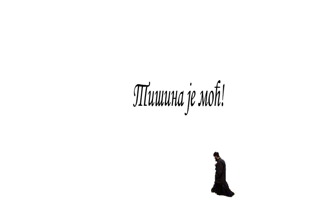

Царе вечни и Господе небеса и земље, Исусе Христе Боже наш, милостиво чуј и услиши молитву нас грешних и недостојних слугу Твојих. Нас ради, Господе, Ти си испио чашу горчине, од безаконика на крст прикован, страшне муке си претрпео на крсту, Искупитељу наш и крв Своју пречисту излио, да нас грехом прокажене очистиш, исцелиш, осветиш и удостојиш царства Твога. Но ми се показасмо као лењиве слуге, лењива ума и срца и раслабљени од безакоња презресмо превелику жртву Твоју за нас и окретосмо се од Тебе да потражимо спасење онамо где спасења нема; положисмо своју наду не у Тебе, који једини можеш помоћи и спасти, него у себе и у људе и у варљиве ствари и у пролазне сујете света овога. Зато су нас на кривим путевима нашим сусреле све беде и невоље овога света. Јер остависмо Тебе, богати извор воде живе, и пођосмо да тражимо воду у пустињи. Остависмо Тебе, хлеб живота, и почесмо хранити душе своје погубном и трулежном храном греха. Остависмо Тебе, светлост света, и залутасмо у таму, у којој се не види ни човек ни Бог. Напустисмо Тебе, који нас никад не напушташ. Напустисмо Тебе, јединог човекољупца и верног пријатеља свих људи и одосмо куцати на непријатељска врата тражећи пријатеље међу непријатељима, спасиоце међу човекоубицама и помоћнике код оних који одмажу. Зато се кајемо, Господе свесилни. Помози нам, да се још више кајемо. Кајемо се гледајући у Тебе распетога на крсту из љубави према нама. Кајемо се гледајући у главу Твоју божанску, увенчану трновим венцем, да би увенчао нас венцима непролазне славе небеске. Кајемо се гледајући у отворене ране на телу Твом и у крв Твоју пречисту, изливену драговољно за очишћење и исцељење греховних рана наших. Кајемо се и приклањамо главу и колена пред крстом Твојим, помози нам да се још више покајемо. Покајане помилуј нас, Исусе Сине Божји, јер само нас милост Твоја може спасти. Не остави нас саме себи, јер без Тебе не можемо ништа учинити. Не одступи од нас, да не постанемо плен адских сила. Но брзо нам притеци у помоћ и спаси нас. И даруј нам благодатну силу духа Твога Светога, као што си даровао светим апостолима и угодницима Твојим. Да би се Духом Твојим очистили и исцелили, и просветили и препородили, те да би појединачно и свенародно, као деца светлости, могли, слично анђелима, славити и хвалити Тебе, Спаситеља Свога са Оцем и Духом Твојим светим. Милостиво чуј покајнички глас наш и услиши нас преко молитава пречисте Твоје Матере и свих Твојих светих. Амин.